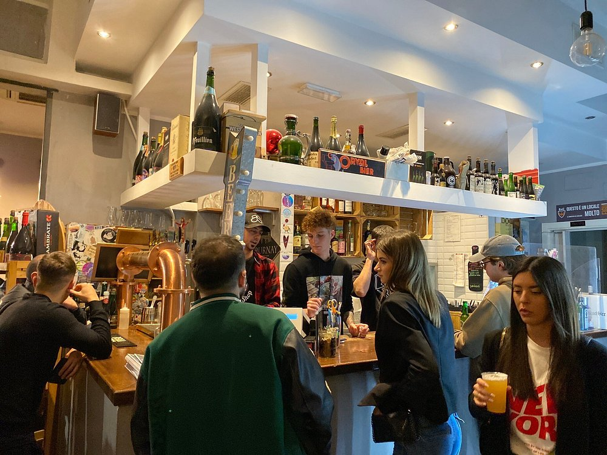
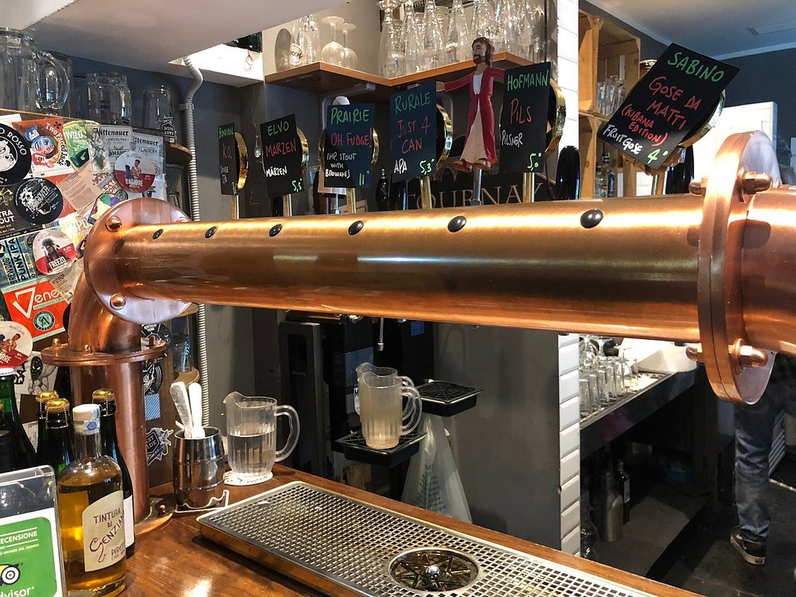
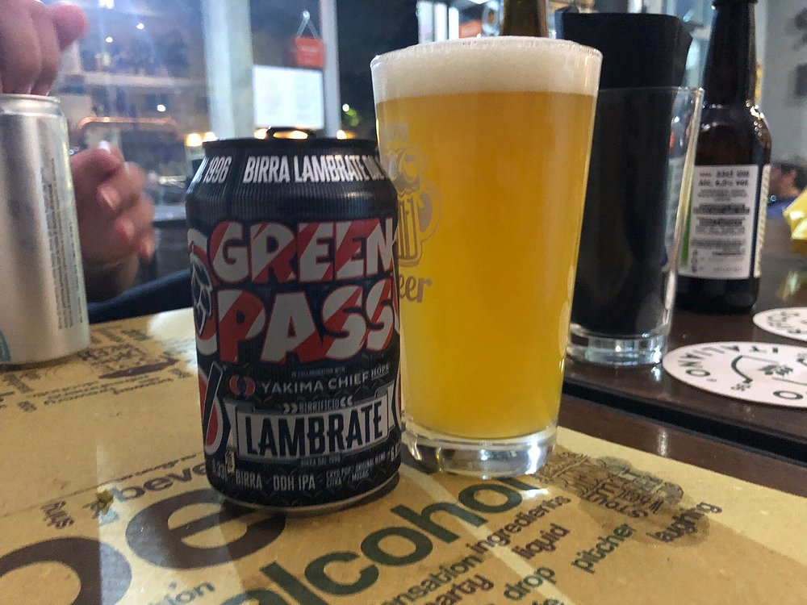
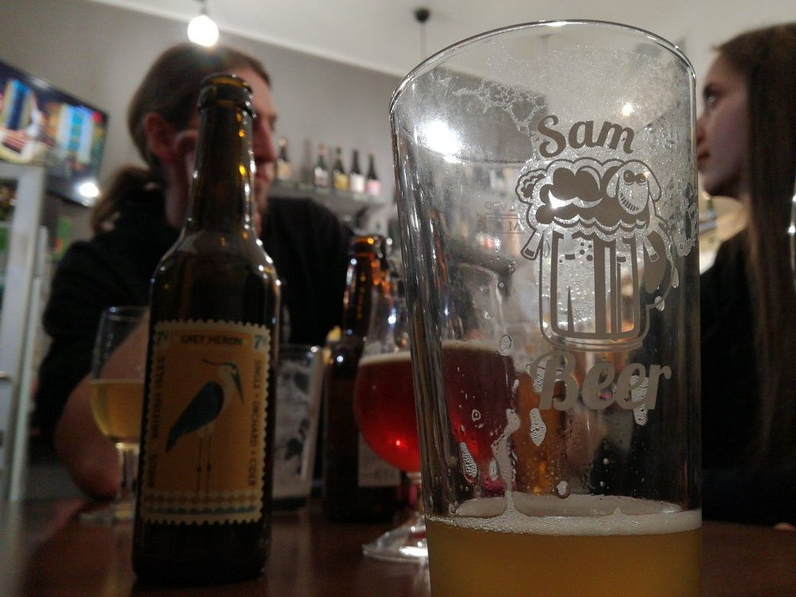

IPA CHE
PUNGONO
Le luppolate decise, americane o europee, per chi vuole sentire il sapore. Amaro che resta in bocca, profumo di agrumi e resina.

Viale dell'Aeronautica 51 · Roma EUR
Il pub di quartiere all'EUR. Birra artigianale, panini fatti come si deve, cocktail che reggono il banco. A pochi passi dalla metro, aperto fino all'una.
/00 — Il rito
Spina aperta, inclinazione giusta, due dita di schiuma.
Scrolla — la riempiamo insieme.
/01 — Dal banco
Non facciamo finta di tenere sempre le stesse 30 spine. Ne giriamo poche, scelte bene. Ecco i registri.

il banco · always
spina del giovedi
il nostro bicchiereLe luppolate decise, americane o europee, per chi vuole sentire il sapore. Amaro che resta in bocca, profumo di agrumi e resina.
Per le serate lunghe, le cene, le prime birre della giornata. Secche, beverine, mai banali.
Scure, dense, da tenere in mano mezz'ora. Caffe, cioccolato, fumo. Una basta.
Quello che gira questa settimana: belga, sour, special edition. Chiedici, sappiamo cosa ti piace.
Le spine girano ogni settimana. Per sapere cosa stiamo spillando ora, seguici su Instagram →
/03 — Il quartiere
All'EUR mancava un pub che non fosse cocktail-bar plastificato. Sam Beer e' nato per quello: birra, panino, due ore di chiacchiere. Lavori qui? Studi qui? Vivi qui? Ci si vede al banco.
"VENGO QUI DAL PRIMO GIORNO. È IL MIO SECONDO SALOTTO."
— Marco, 28 · cliente fisso del giovedì
"BIRRA SERIA E NON SI PAGA MAI IL COPERTO. TROVAMENE UN ALTRO ALL'EUR."
— Giulia, 24 · ufficio qui vicino
"IL PECORA NERA È IL MIGLIOR HAMBURGER DELLA ZONA. PUNTO."
— Luca, 31 · fan dei panini
5'
a piedi dalla metro EUR Fermi
12+
birre alla spina ogni settimana
365
giorni l'anno aperti
01:00
la chiusura. l'ultima è sempre tua
/04 — Visitaci
Sam Beer Shop
VIALE DELL'AERONAUTICA 51
00144 Roma · Zona EUR sud
[MAPPA — STAGE 2]
Orari
Una cosa sola
TI E PIACIUTO?
LASCIACI UNA RECENSIONE.
Per noi vale piu di mille post.
/05 — Social